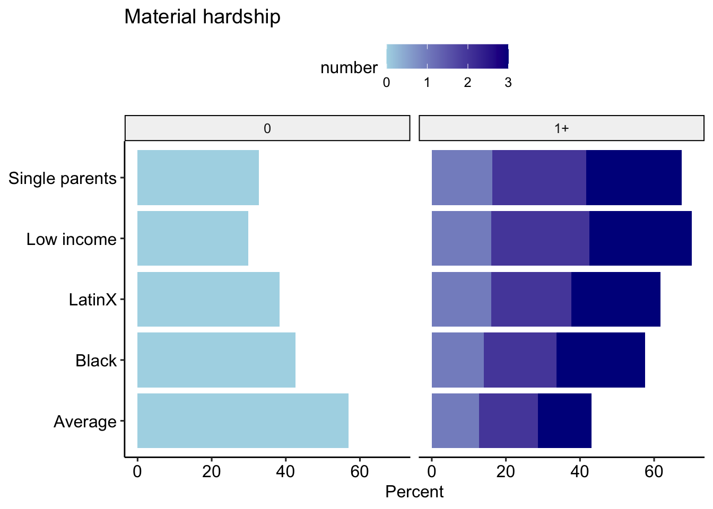

Material hardship post CARES
Representativeness disclaimer
These analyses are based on responses collected from 8390 caregivers between the dates of April 06, 2020 and November 21, 2020. These caregivers represent a range of voices: 5.89% are Black/African American, 11.75% are LatinX, and 20.95% live at or below 1.5 times the federal poverty line. Proportions/percentages are calculated based on the item-level response rates, not out of the total sample size. The data for these analyses are not weighted.
Material hardship
Overall
Black/African American
LatinX
## SingleLow Income
All groups
Number of hardships
Note that foreclosure and housing were combined into a single variable.
Overall

Black African American

LatinX

Single

Low Income

All Groups
